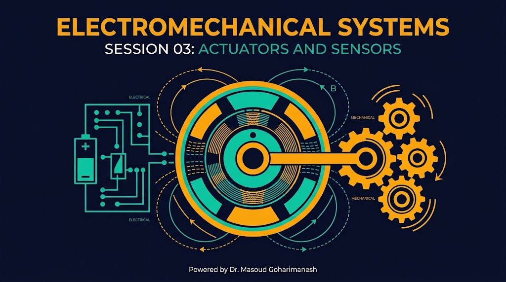
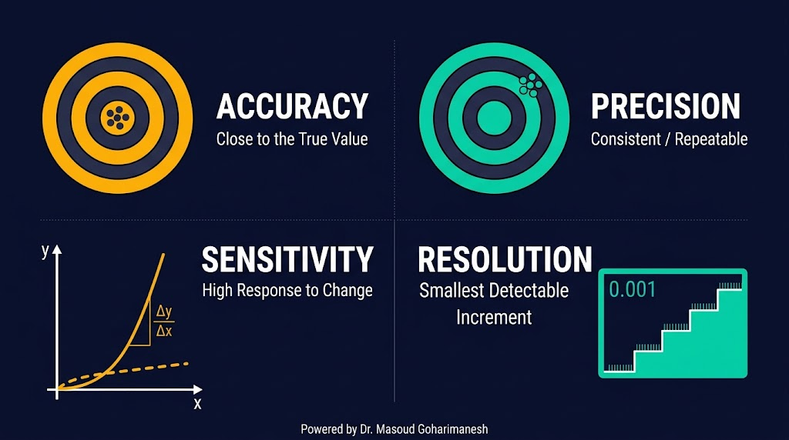
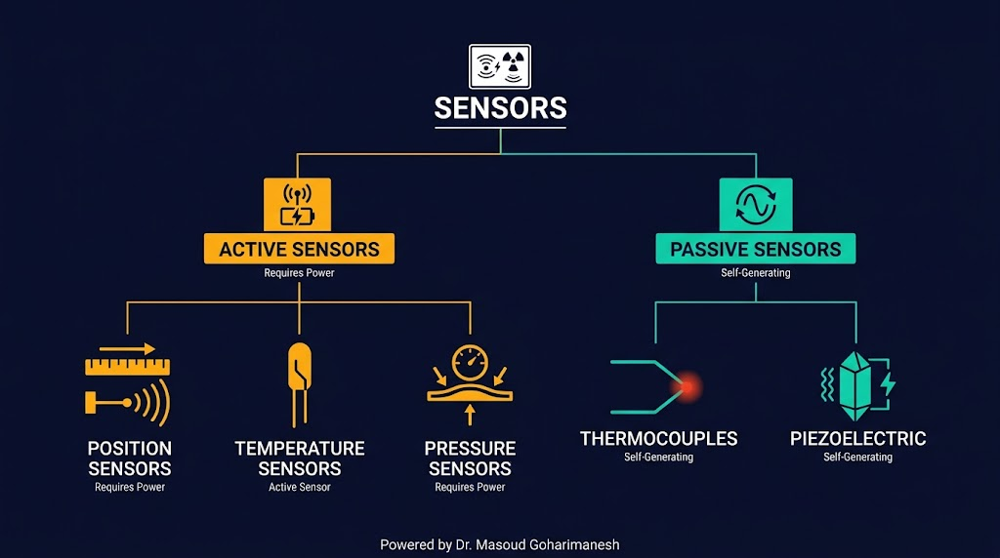
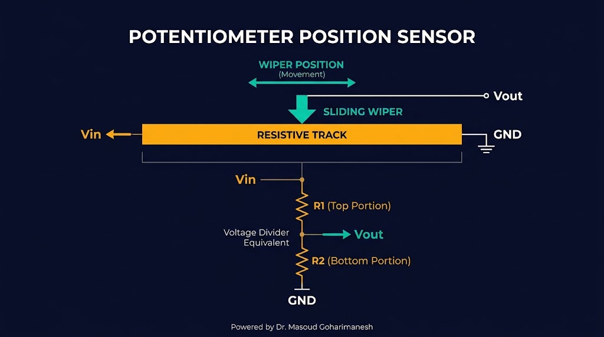
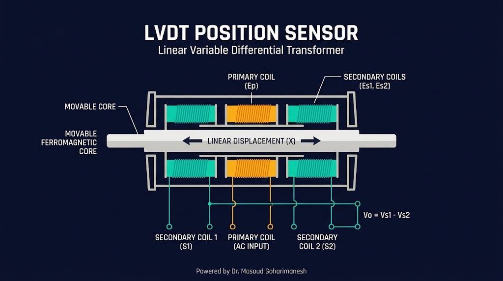
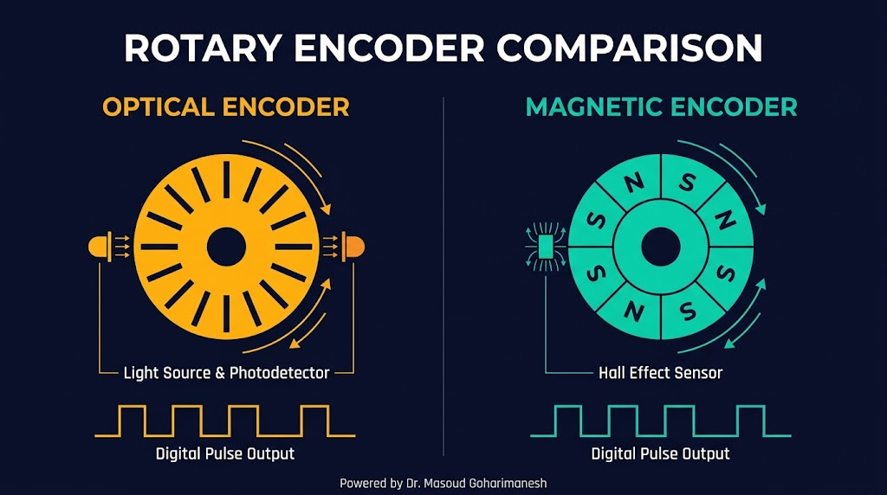
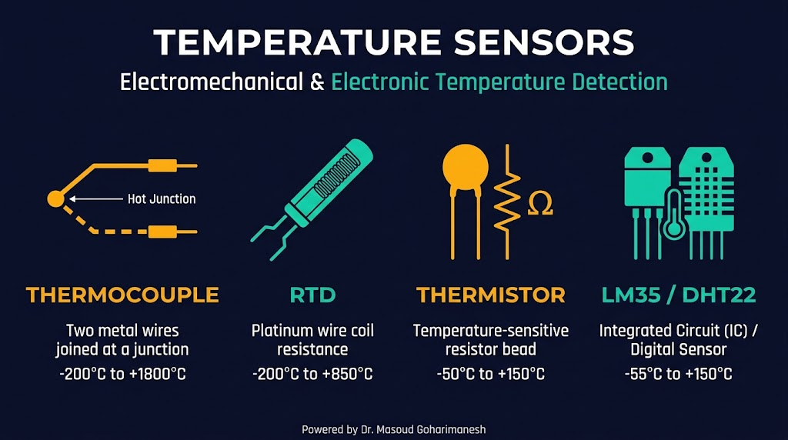
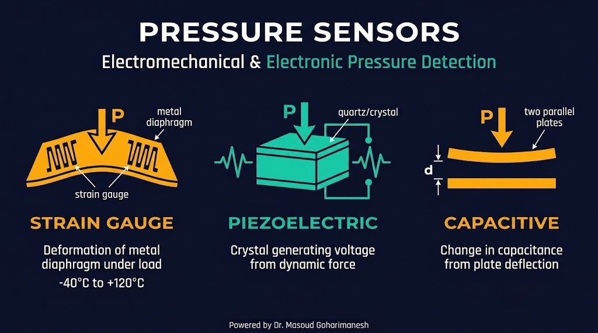

بخش اول: اصول، موقعیت، دما و فشار
دکتر مسعود گوهریمنش
دانشیار گروه مهندسی مکانیک
دانشگاه تربت حیدریه | پاییز ۱۴۰۵
یک ربات بدون سنسور، مانند انسانی بدون حواس پنجگانه است!
چگونه میتوان یک کمیت فیزیکی (مثل دما یا موقعیت) را به سیگنال الکتریکی قابل پردازش تبدیل کرد؟
چهار مفهوم اساسی در انتخاب سنسور

نزدیکی مقدار اندازهگیریشده به مقدار واقعی. هرچه دقت بالاتر، خطا کمتر.
تکرارپذیری اندازهگیری. یک سنسور میتواند صحت بالا ولی دقت پایین داشته باشد.
نسبت تغییر خروجی به تغییر ورودی. حساسیت بالاتر یعنی تشخیص تغییرات کوچکتر.
کوچکترین تغییر قابل تشخیص در ورودی. در سنسورهای دیجیتال، تعداد بیتها تعیینکننده است.
منابع خطا در اندازهگیری
انواع مختلف بر اساس عملکرد

نیاز به منبع تغذیه خارجی — مثل انکودر، سنسور فشار
تولید سیگنال بدون منبع خارجی — مثل ترموکوپل، پیزوالکتریک
خروجی پیوسته (LM35) یا پالسی (انکودر)
سادهترین و ارزانترین سنسور موقعیت

ترانسفورماتور دیفرانسیلی متغیر خطی

یک سیمپیچ اولیه (Primary) با جریان متناوب تغذیه میشود. حرکت هسته فرومغناطیسی باعث تغییر القای متقابل در دو سیمپیچ ثانویه (Secondary) میشود. اختلاف ولتاژ دو ثانویه، متناسب با جابجایی هسته است.
دقت بالا، بدون تماس، عمر طولانی
گران، نیاز به مدار تحریک AC
قلب کنترل موقعیت در رباتیک

دیسکی با شیارهای ریز که بین LED و فوتودیود قرار میگیرد. با چرخش، پالسهای دیجیتال تولید میشود.
دیسک مغناطیسی با قطبهای متناوب N/S. سنسور Hall تغییرات میدان را تشخیص میدهد.
Incremental: پالسهای A و B برای جهت، پالس Z برای مرجع — Absolute: کد موقعیت مطلق (Gray code)
اثر سیبک: تبدیل اختلاف دما به ولتاژ

وقتی دو فلز غیرهمجنس در یک نقطه به هم متصل شوند و اختلاف دما بین نقطه اتصال و سر آزاد وجود داشته باشد، یک ولتاژ کوچک (چند میلیولت) تولید میشود.
محدوده دمایی وسیع (-200 تا 1800°C)، پاسخ سریع، ارزان
ولتاژ خروجی کم، نیاز به تقویت، نیاز به جبران دمای مرجع
تغییر مقاومت با دما
NTC: مقاومت با دما کاهش مییابد — PTC: افزایش مییابد
LM35 و DHT22 در پروژههای رباتیک
سنسور دمای آنالوگ با خروجی خطی. هر ۱۰ میلیولت معادل ۱ درجه سانتیگراد.
محدوده: 2 تا 150°C | دقت: ±0.5°C
سنسور دما و رطوبت دیجیتال. خروجی سریال با پروتکل اختصاصی 1-Wire.
سه تکنولوژی اصلی

تغییر مقاومت در اثر کرنش دیافراگم — پرکاربرد، ارزان
تولید بار الکتریکی در اثر فشار — مناسب فشارهای دینامیکی
تغییر ظرفیت خازن با فاصله صفحات — دقت بالا، حساس به دما
کنترل حلقه بسته موقعیت مفصل
نکته کلیدی: رزولوشن انکودر مستقیماً روی دقت نهایی کنترل موقعیت تأثیر میگذارد. برای یک بازوی دقیق، انکودر با حداقل 1000 پالس در دور توصیه میشود.
اندازهگیری زاویه با انکودر افزایشی
خروجی پالسی کانال A
با تغییر زاویه و رزولوشن، رفتار انکودر را مشاهده کنید.
جلسه سوم - سنسورها و ترانسدیوسرها (بخش اول)
نکات کلیدی جلسه سوم
جلسه بعد: سنسورها و ترانسدیوسرها (بخش دوم) — نوری، تصویری، شتاب، سرعت
Powered by Dr. Masoud Goharimanesh